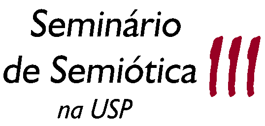

VIII m i n i E N A P O L

VIII
miniENAPOL de Semiótica
e
III Seminário de Semiótica na USP

Anfiteatro de História - FFLCH-USP
de 05 a 07 (miniENAPOL) / de 08 a 09 (SEM-SEM) de outubro de 2009
das 8 às 18 horas
A
sigla ENAPOL quer dizer Encontro dos Alunos da
Pós-Graduação em Semiótica
e Linguística Geral. A cada ano acontece na FFLCH-USP um
ENAPOL geral, todas as áreas confundidas, e, durante os
meses subsequentes, as diversas linhas de pesquisa promovem seus
minienapóis setoriais, a fim de propiciar o contato entre os
especialistas desta ou daquela área no âmbito das
ciências da linguagem.
Desde sua
inauguração em 2001, o miniENAPOL de
Semiótica vem sendo realizado
na FFLCH-USP com crescente participação de
estudantes de todos os níveis, além
da presença de renomados professores da área.
Trata-se
de um evento no qual são expostas e discutidas as pesquisas
em andamento dos
pós-graduandos ligados à semiótica e
aos domínios conexos. Alunos de
graduação
envolvidos com pesquisa (Iniciação
Científica, por exemplo) também têm
espaço
para falar de seus trabalhos. Ao mesmo tempo, contamos com a
participação ativa
de membros dos diversos grupos existentes em São Paulo e,
cada vez mais, também provenientes de cidades de diferentes
Estados do país, bem como daqueles
que não têm
vínculos de grupo, mas desenvolvem pesquisas nesse campo do
conhecimento.
Não há determinação temática para as comunicações. O miniENAPOL acolhe trabalhos incidindo sobre os mais variados temas, desde que a abordagem esteja vinculada à semiótica e aos campos limítrofes. Cada comunicação tem a duração de 15 minutos, prevendo-se ao final de cada sessão um tempo para o debate dos expositores com o público presente.
Existem duas maneiras de inscrever-se ao miniENAPOL de Semiótica:
1. Inscrição
com apresentação
de trabalho - até 12 de setembro (prazo encerrado). Valores: R$ 20,00 para alunos de
pós-graduação e R$ 10,00 para
alunos de graduação. O pagamento da
inscrição será efetuado pelos
expositores
no dia de sua comunicação, durante o evento.
2. Inscrição apenas para assistir,
sem apresentação de trabalho. As
inscrições são gratuitas e podem ser
feitas até o primeiro dia do miniENAPOL, 05 de outubro.
Quem se inscreve como ouvinte no miniENAPOL 2009 ganha automaticamente o direito de assistir também às sessões do III Seminário de Semiótica na USP, programadas para os dias 08 e 09 de outubro, e que reunirão pesquisadores docentes de múltiplas universidades brasileiras, alguns dos quais participarão também do Encontro Intermediário do GT de Semiótica da ANPOLL. A programação de ambos os eventos pode ser consultada aqui.
Serão expedidos certificados de comunicação realizada a todos os expositores; os ouvintes com frequência mínima de 70 % terão certificado de presença.
Coordenação geral dos eventos:
Elizabeth Harkot de La Taille (DLM-FFLCH-USP)
Waldir Beividas (DL-FFLCH-USP)
Ivã Carlos Lopes (DL-FFLCH-USP)
Comissão Organizadora 2009:
Francisco Elias Simão Merçon, Mariana Luz Pessoa de Barros, Carolina Tomasi, Juliana Di Fiori Pondian, Bruna Paola Zerbinatti, Paolo Demuru, Lucas Takeo Shimoda, Giane Taeko Mori Rodella, Paula Martins de Souza, Cíntia Morais Marinho, Luís Antonio Damasceno Silva, Camila dos Santos Ribeiro, Dayane Celestino de Almeida
Equipe de revisão dos resumos:
Mariana Luz Pessoa de Barros, Francisco Elias Simão Merçon, Juliana Di Fiori Pondian, Paula Martins de Souza, Carolina Tomasi, Alexandre Marcelo Bueno, Sueli Maria Ramos da Silva
INSCRIÇÕES
 PROGRAMAÇÃO miniENAPOL de Semiótica 2009
PROGRAMAÇÃO miniENAPOL de Semiótica 2009